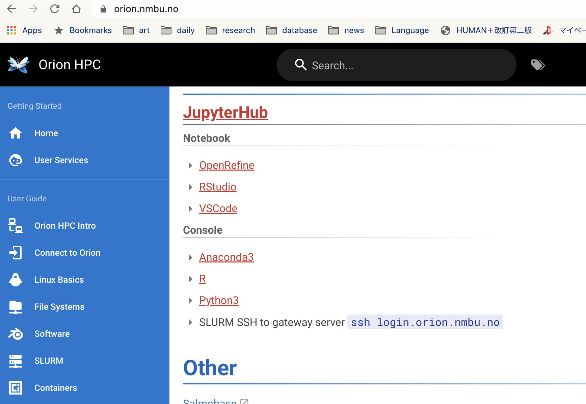
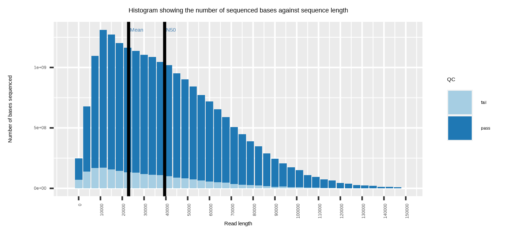

AnimalGenomics2022
Marie Saitou
2/20/2022
Last updated: 2022-02-25
Checks: 7 0
Knit directory: Bio326/
This reproducible R Markdown analysis was created with workflowr (version 1.6.2). The Checks tab describes the reproducibility checks that were applied when the results were created. The Past versions tab lists the development history.
Great! Since the R Markdown file has been committed to the Git repository, you know the exact version of the code that produced these results.
Great job! The global environment was empty. Objects defined in the global environment can affect the analysis in your R Markdown file in unknown ways. For reproduciblity it’s best to always run the code in an empty environment.
The command set.seed(20210128) was run prior to running the code in the R Markdown file. Setting a seed ensures that any results that rely on randomness, e.g. subsampling or permutations, are reproducible.
Great job! Recording the operating system, R version, and package versions is critical for reproducibility.
Nice! There were no cached chunks for this analysis, so you can be confident that you successfully produced the results during this run.
Great job! Using relative paths to the files within your workflowr project makes it easier to run your code on other machines.
Great! You are using Git for version control. Tracking code development and connecting the code version to the results is critical for reproducibility.
The results in this page were generated with repository version 9860c1d. See the Past versions tab to see a history of the changes made to the R Markdown and HTML files.
Note that you need to be careful to ensure that all relevant files for the analysis have been committed to Git prior to generating the results (you can use wflow_publish or wflow_git_commit). workflowr only checks the R Markdown file, but you know if there are other scripts or data files that it depends on. Below is the status of the Git repository when the results were generated:
Ignored files:
Ignored: .DS_Store
Ignored: .RData
Ignored: .Rhistory
Ignored: analysis/.DS_Store
Ignored: analysis/popgen.simu.nb.html
Untracked files:
Untracked: BIO326 URL genome annotatin computer lab_24_MAR_2021.docx
Untracked: BIO326-121VGenomesequencingBIO326-121VGenomsekvensering;verktøyoganalyser-BIO326-121VGenomesequencing_PhillipByronPope.pdf
Untracked: BIO326-RNAseq.pptx
Untracked: BIO326-genome/
Untracked: BIO326.MS.10th_FEB_2021function.pptx
Untracked: BIO326_Introduction to sequence technology and protocols_3rd_FEB_2021.pdf
Untracked: BIO326_Introduction to sequence technology and protocols_3rd_FEB_2021.pptx
Untracked: BIO326_RNAseq_5th_FEB_2021.pptx
Untracked: BIO326_SQK-RAD004 DNA challenge.docx
Untracked: BIO326_visual_30_APR_2021.pptx
Untracked: Bio326.2022.1.Rmd
Untracked: Bio326.genome.html
Untracked: Nanopore_SumStatQC_Tutorial.Rmd
Untracked: PCRdemo.R
Untracked: Pig_mutation_hist.csv
Untracked: PopGenBio326.322/
Untracked: RNAseq.Rplot.pdf
Untracked: Untitled.R
Untracked: [eng]BIO326-121VGenomesequencingBIO326-121VGenomsekvensering;verktøyoganalyser-BIO326-121VGenomesequencing_PhillipByronPope.mht
Untracked: [eng]BIO326-121VGenomesequencingBIO326-121VGenomsekvensering;verktøyoganalyser-BIO326-121VGenomesequencing_PhillipByronPope.pdf
Untracked: analysis/AnimalGenomics.Rmd
Untracked: analysis/AnimalGenomicsVariant2022.Rmd
Untracked: prepare.txt
Untracked: samples.xlsx
Untracked: test/
Untracked: trial/
Untracked: vis.xlsx
Untracked: workflowR.bio326.R
Note that any generated files, e.g. HTML, png, CSS, etc., are not included in this status report because it is ok for generated content to have uncommitted changes.
These are the previous versions of the repository in which changes were made to the R Markdown (analysis/AnimalGenomics2022.Rmd) and HTML (docs/AnimalGenomics2022.html) files. If you’ve configured a remote Git repository (see ?wflow_git_remote), click on the hyperlinks in the table below to view the files as they were in that past version.
| File | Version | Author | Date | Message |
|---|---|---|---|---|
| Rmd | 9860c1d | mariesaitou | 2022-02-25 | image data set |
| html | f011edc | mariesaitou | 2022-02-24 | Build site. |
| Rmd | e46455f | mariesaitou | 2022-02-24 | wflow_publish(c(“analysis/AnimalGenomics2022.Rmd”)) |
| html | 3388f17 | mariesaitou | 2022-02-24 | Build site. |
| Rmd | 8c86307 | mariesaitou | 2022-02-24 | image data set |
| html | 48c1cbb | mariesaitou | 2022-02-22 | Build site. |
| Rmd | 82d936e | mariesaitou | 2022-02-22 | wflow_publish(c(“analysis/AnimalGenomics2022.Rmd”)) |
| html | 6598d81 | mariesaitou | 2022-02-22 | Build site. |
| Rmd | e91b0c3 | mariesaitou | 2022-02-22 | wflow_publish(c(“analysis/AnimalGenomics2022.Rmd”)) |
| html | 851a839 | mariesaitou | 2022-02-22 | Build site. |
| html | c872817 | mariesaitou | 2022-02-22 | Build site. |
| Rmd | 63de7c5 | mariesaitou | 2022-02-22 | wflow_publish(c(“analysis/AnimalGenomics2022.Rmd”)) |
| html | f062cb1 | mariesaitou | 2022-02-22 | Build site. |
| Rmd | 8abd3b8 | mariesaitou | 2022-02-22 | wflow_publish(c(“analysis/AnimalGenomics2022.Rmd”)) |
| html | 9e344fb | mariesaitou | 2022-02-21 | Build site. |
| Rmd | 2a745f9 | mariesaitou | 2022-02-21 | wflow_publish(c(“analysis/AnimalGenomics2022.Rmd”)) |
| html | 76d6852 | mariesaitou | 2022-02-21 | Build site. |
| Rmd | c7c789a | mariesaitou | 2022-02-21 | wflow_publish(c(“analysis/AnimalGenomics2022.Rmd”)) |
The tutorial is adapted from Nanopore Community (registration required) for educational purpose only.
Aim of the tutorial.
Last time, you have started sequencing of pig genome using Nanopore MinION. Today, we will learn:
How to use Rstudio on Orion to conduct analysis
How to interpret summary statistics of Nanopore sequence data
How to edit the tutorial and analyze your own data
In this tutorial, we will investigate a pre-made pig genome sequence. You can change parameters to investigate your data for the report. Also, Matthew and I prepared some questions in each section. Please discuss and try the quizzes to deepen your understandig on Nanopore data.
You do not have to understand everything… the script is mainly separated in two parts, “extract the necessary data and organize it” and “data visualization”. If you are ambitious, or you are already farmiliar with ggplot2, you can play around with the figures by adjusting parameters.
Connect to Orion
Go to https://orion.nmbu.no/ at NMBU or with VPN.

Click “Rstudio”

Click “2 hours”
Click “Rstudio-4.1.0”
0. Preparation
You will be start typing/pasting the scripts to “Console” with some modifications.
Where is your personal directory?
You have to change “working directory” to your directory (bio326-22-XX)
setwd("/net/cn-1/mnt/SCRATCH/bio326-22-XX/")
#setwd("/net/cn-1/mnt/SCRATCH/bio326-21/bio326_2022/AnimalGenomics/QCTutorial/")
## Install necessary libraries
install.packages(c("dplyr","emojifont","extrafont","ggplot2","RColorBrewer","tufte","caTools","fastmatch"))
## Load libraries
library(dplyr)
library(emojifont)
library(extrafont)
library(ggplot2)
library(RColorBrewer)
library(tufte)
library(caTools)
library(fastmatch)
# Make a result directory
dir.create("Results", showWarnings = FALSE)Set Parameters
qcThreshold <- 7
binFilter <- 5
scaling <- 1
reportDPI <- 300
slurpContent <- function(filename) {
setup = as.logical(tutorialText)
if (setup) {
paste(readLines(filename),collapse="\n")
}
}Executive summary
You have to change “input file” and other info When you analyze another data.
## inputFile. You can select your file.
## If you are ambitious, there is another data "pig17"
## /net/cn-1/mnt/SCRATCH/bio326-21/bio326_2022/AnimalGenomics/17/sequencing_summary_17.txt
inputFile <- "/net/cn-1/mnt/SCRATCH/bio326-21/bio326_2022/AnimalGenomics/92/sequencing_summary_92.txt"
sequencedata <- data.table::fread(inputFile, stringsAsFactors=FALSE)
# You may want to change them.
flowcellId <- "PAG06497" # example "FAK41706". Please adjust it according to your data.
basecaller <- "Guppy 4.0.11" # example "Guppy 2.1.3". Please adjust it according to your data.Info:
flowcellId = “PAG06497” (pig92), “PAG04717” (pig17) and you will have three flowcells from your experiments.
The summary dataset contains too much information. We will calculate and extract core info. (You can take a look the summary file by putting the follwing path in “Terminal” tub).
more /net/cn-1/mnt/SCRATCH/bio326-21/bio326_2022/AnimalGenomics/92/sequencing.summary_92.txtExtract and organize the information
# remove the redundant headers from merged files
if (length(which(sequencedata[,1]=="filename")) > 0) {
sequencedata <- sequencedata[-which(sequencedata[,1]=="filename"),]
}
# coerce the columns used in analytics into more appropriate data-types
sequencedata$channel<-as.numeric(sequencedata$channel)
sequencedata$start_time<-as.numeric(sequencedata$start_time)
sequencedata$duration<-as.numeric(sequencedata$duration)
sequencedata$num_events<-as.numeric(sequencedata$num_events)
sequencedata$sequence_length_template<-as.numeric(sequencedata$sequence_length_template)
sequencedata$mean_qscore_template<-as.numeric(sequencedata$mean_qscore_template)
# passes_filtering is a useful flag; but there are examples of sequencing_summary.txt where this
# is not present - https://github.com/a-slide/pycoQC/blob/master/pycoQC/data/sequencing_summary_1D_DNA_Albacore_1.2.1.txt
if (! "passes_filtering" %in% colnames(sequencedata)) {
# set all of the reads to pass? apply a cutoff?
sequencedata$passes_filtering <- TRUE
} else {
sequencedata$passes_filtering <- as.logical(sequencedata$passes_filtering)
}
# create a separation of pass and fail sequences...
passedSeqs <- sequencedata[which(sequencedata$passes_filtering), ]
failedSeqs <- sequencedata[which(!sequencedata$passes_filtering), ]
#####################
# calculate key metrics
readCount <- formatC(nrow(sequencedata), big.mark=",")
totalBases = sum(sequencedata$sequence_length_template,na.rm=T)/10^9
passedBases = sum(passedSeqs$sequence_length_template,na.rm=T)/10^9
gigabases <- round(totalBases,2)
# prepare a data object to render a summary graphic
figures <- 3
df <- data.frame(
x = cumsum(c(2, rep(6.5, figures-1))),
y = rep(2, figures),
h = rep(4, figures),
w = rep(6, figures))
df$info <- c("flowcell", readCount, gigabases)
df$key <- c(flowcellId,"Reads produced", "gigabases called")
df$icon <- fontawesome(c('fa-qrcode', 'fa-filter', 'fa-file-text-o'))
df$colour <- rep("steelblue", figures)1. Generate a summary figure
# and display the plot
ExecutiveSummaryValueBoxes <- ggplot(df, aes(x, y, height = h, width = w, label = key, fill = colour)) +
geom_tile(fill = brewer.pal(9,"Blues")[7]) +
geom_text(color = brewer.pal(9,"Blues")[3], hjust="left", nudge_y=-1.5, nudge_x=-2.6, size=5) +
geom_text(label=df$info, size=10, color = brewer.pal(9,"Blues")[2], fontface = "bold", nudge_x=-2.6, hjust="left") +
geom_text(label=df$icon, family='fontawesome-webfont', colour=brewer.pal(9,"Blues")[5], size=23, hjust="right", nudge_x=2.85, nudge_y=0.8) +
coord_fixed() +
theme_void() +
guides(fill = F)You have to change “output file name” if you work with multiple dataset not to overwrite previous output.
# save ... "Figure1.Summary.png" is the output file name.
ggsave(file.path("Results", "Figure1.Summary.png"), plot=ExecutiveSummaryValueBoxes, device="png", units="cm", width=15, height=3, dpi=reportDPI)Result1
Click to display
How to download files from Orion to your laptop…?
scp yourID@login.orion.nmbu.no:/file.png your/local/file.png Question1
This sequence data is from a pig sample (Sus scrofa). Approximately what coverage do you estimate each of the three MinION runs has produced?
If you had generated the same amount of data for a fruit fly (Drosophila melanogaster) or E.coli sample, how much coverage would you have?
Hint
Coverage = (Obtained sequenced bases) / (genome size)
2. Generate a flowcell channel figure
## Data formatting and preparation
# create an empty read count container ... MinION or PromethION??
# https://gist.github.com/roblanf/df47b9748c3aae00809cc675aca79989
# build the map for R9.5 flowcell, as a long-form dataframe that translates
# channels into rows and columns on the flowcell. Good for plotting in R.
p1 = data.frame(channel=33:64, row=rep(1:4, each=8), col=rep(1:8, 4))
p2 = data.frame(channel=481:512, row=rep(5:8, each=8), col=rep(1:8, 4))
p3 = data.frame(channel=417:448, row=rep(9:12, each=8), col=rep(1:8, 4))
p4 = data.frame(channel=353:384, row=rep(13:16, each=8), col=rep(1:8, 4))
p5 = data.frame(channel=289:320, row=rep(17:20, each=8), col=rep(1:8, 4))
p6 = data.frame(channel=225:256, row=rep(21:24, each=8), col=rep(1:8, 4))
p7 = data.frame(channel=161:192, row=rep(25:28, each=8), col=rep(1:8, 4))
p8 = data.frame(channel=97:128, row=rep(29:32, each=8), col=rep(1:8, 4))
q1 = data.frame(channel=1:32, row=rep(1:4, each=8), col=rep(16:9, 4))
q2 = data.frame(channel=449:480, row=rep(5:8, each=8), col=rep(16:9, 4))
q3 = data.frame(channel=385:416, row=rep(9:12, each=8), col=rep(16:9, 4))
q4 = data.frame(channel=321:352, row=rep(13:16, each=8), col=rep(16:9, 4))
q5 = data.frame(channel=257:288, row=rep(17:20, each=8), col=rep(16:9, 4))
q6 = data.frame(channel=193:224, row=rep(21:24, each=8), col=rep(16:9, 4))
q7 = data.frame(channel=129:160, row=rep(25:28, each=8), col=rep(16:9, 4))
q8 = data.frame(channel=65:96, row=rep(29:32, each=8), col=rep(16:9, 4))
# long form as a data frame, i.e. map$channel[[1]] returns 33
channelMap = rbind(p1, p2, p3, p4, p5, p6, p7, p8, q1, q2, q3, q4, q5, q6, q7, q8)
hm.palette <- colorRampPalette(brewer.pal(9, 'Blues'), space='Lab') #RdPu, Oranges, Greens, YlOrRd, Purples
channelCounts <- as.data.frame(matrix(rep(0, 512), ncol=1))
channelCountRaw <- as.data.frame(table(unlist(sequencedata[, "channel"])), row.names=1)
channelCounts[row.names(channelCountRaw),] <- channelCountRaw[,1]
#channelMap <- cbind(channelMap[channelMap$channel,], frequency=channelCounts[channelMap$channel,])
channelMap <- merge(channelMap, channelCounts, by.x="channel", by.y=0)
colnames(channelMap)[4]<-"count"
channelMapMatrix <- reshape2::acast(channelMap, col ~ row, value.var = "count")
theme_update(plot.title = element_text(hjust = 0.5))## Actual figure generation
channel<-ggplot(channelMap, aes(x = row, y = col, fill = count)) +
geom_tile() +
geom_text(data=channelMap,aes(x=row, y=col,label=count,color=count),show.legend = F, size=4) +
scale_x_discrete(breaks=NULL) +
scale_y_discrete(breaks=NULL) +
coord_equal() +
scale_fill_gradientn(colours = hm.palette(100)) +
scale_color_gradient2(low = hm.palette(100), high = hm.palette(1)) +
theme(axis.text.x = element_text(angle = 90, hjust = 1)) +
labs(title="Channel activity plot showing number of reads per flowcell channel") +
theme(panel.border = element_blank(), panel.grid.major = element_blank(),
panel.grid.minor = element_blank(),
axis.title.x = element_blank(),
axis.title.y = element_blank(),
legend.position="bottom",
legend.key.width=unit(5.6,"cm"))You have to change “output file name” if you work with multiple dataset not to overwrite previous output.
ggsave(file.path("Results", "Figure2.channel.png"), plot=channel, device="png", units="cm", width=15, height=12, dpi=reportDPI)Result2
Click to display
Question2
- Within a Flowcell, what explanation(s) can there be for variation in channel activity.
- Comparing the three MinION runs is there (subjectively) similar variation in channel activity or does one run stand-out as superior or inferior to the others? Why might this be?
Matthew’s hint
Consider the flowcell design and the reason for the MUX scan.3. Generate a read-length figure
## Data formatting and preparation
lenSorted <- rev(sort(passedSeqs$sequence_length_template))
passedMeanLength = round(mean(lenSorted), digits = 0)
N50 <- lenSorted[cumsum(lenSorted) >= sum(lenSorted)*0.5][1]
passedMeanQ = round(mean(passedSeqs$mean_qscore_template), digits = 1)
failedMeanQ = round(mean(failedSeqs$mean_qscore_template), digits = 1)
figures <- 5
df <- data.frame(
x = cumsum(c(2, rep(6.5, figures-1))),
y = rep(2, figures),
h = rep(4, figures),
w = rep(6, figures))
df$info <- c(passedMeanLength, N50, passedMeanQ, failedMeanQ, prettyNum(max(passedSeqs$sequence_length_template), big.mark=","))
df$key <- c("Mean Read Length (nt)","N50","Mean Read Quality (QV)","Mean Failed QV","Longest Read")
df$icon <- fontawesome(c("fa-bar-chart", "fa-play", "fa-area-chart", "fa-bug", "fa-sort"))
df$colour <- rep("steelblue", figures)
ReadCharacteristicsValueBoxes <- ggplot(df, aes(x, y, height = h, width = w, label = key, fill = colour)) +
geom_tile(fill = brewer.pal(9,"Blues")[7]) +
geom_text(color = brewer.pal(9,"Blues")[3], hjust="left", nudge_y=-1.5, nudge_x=-2.6, size=3.5) +
geom_text(label=df$info, size=5.5, color = brewer.pal(9,"Blues")[2], fontface = "bold", nudge_x=-2.6, hjust="left") +
geom_text(label=df$icon, family='fontawesome-webfont', colour=brewer.pal(9,"Blues")[5], size=13.3, hjust="right", nudge_x=2.85, nudge_y=0.8) +
coord_fixed() +
scale_fill_brewer(type = "qual",palette = "Dark2") +
theme_void() +
guides(fill = F)
roundUpNice <- function(x, nice=seq(from=1, to=10, by=0.25)) {
if(length(x) != 1) stop("'x' must be of length 1")
10^floor(log10(x)) * nice[[which(x <= 10^floor(log10(x)) * nice)[[1]]]]
}
upperLimit <- roundUpNice(as.numeric(quantile(x=sequencedata$sequence_length_template, probs=c(0.999))))
histogramBinCount <- 40
breakVal = roundUpNice(upperLimit / histogramBinCount)
breaks <- seq(0, to=upperLimit, by=breakVal)
binAssignments <- cut(sequencedata$sequence_length_template, breaks, eval.lowest=TRUE, right=FALSE)
scrapeBinnedBases <- function(level, qcpass) {
sum(subset(sequencedata[which(binAssignments == level), ], passes_filtering==qcpass)$sequence_length_template)
}
passedBinnedBases <- unlist(lapply(levels(binAssignments), scrapeBinnedBases, qcpass=TRUE))
failedBinnedBases <- unlist(lapply(levels(binAssignments), scrapeBinnedBases, qcpass=FALSE))
binnedBaseDist <- data.frame(length=head(breaks, -1), pass=passedBinnedBases, fail=failedBinnedBases)
binnedBaseMelt <- reshape2::melt(binnedBaseDist, id.vars=c("length"))## Actual figure generation
## You can adjust "upperLimit".
length<-ggplot(binnedBaseMelt, aes(x=length, fill=variable, y=value)) +
geom_bar(stat="identity") +
xlab("Read length\n") + ylab("Number of bases sequenced\n") +
scale_fill_manual("QC", values=c("fail"=brewer.pal(6, "Paired")[1], "pass"=brewer.pal(6, "Paired")[2])) +
scale_x_continuous(limits=c(-breakVal,upperLimit), breaks=pretty(passedSeqs$sequence_length_template,n=40)) +
theme(axis.text.x = element_text(angle = 90, hjust = 1)) +
labs(title="Histogram showing the number of sequenced bases against sequence length", fill="QV filter")+
geom_vline(xintercept = N50, size = 1) +
annotate("text", x=N50, y=max(passedBinnedBases + failedBinnedBases), label = " N50", hjust=0, colour="SteelBlue") +
geom_vline(xintercept = passedMeanLength, size = 1) +
annotate("text", x=passedMeanLength, y=max(passedBinnedBases + failedBinnedBases), label = " Mean", hjust=0, colour="SteelBlue")You have to change “output file name” if you work with multiple dataset not to overwrite previous output.
ggsave(file.path("Results", "Figure3.length.png"), plot=length, device="png", units="cm", width=12, height=6, dpi=reportDPI)Result3
Click to display

Question3
- What do Mean and N50 reflect?
- From the figure, explain how you could roughly estimate the number of sequenced DNA molecules represented in the 10Kb histogram bar. How does this compare to the number of sequenced DNA molecules represented in the 50Kb histogram bar?
- What are “failed” reads?
- When analysing your own pig data from the lab and compared to the gel image for the samples used in library preparation, are you surprised by the distribution of fragment lengths? Why?
Matthew’s hint
Google! Look at Q-scores.4. Generate a sequence-time figure
## Data formatting and preparation
sequencedata$start_time <- sequencedata$start_time - min(sequencedata$start_time)
sequencedata$start_time <- sequencedata$start_time / scaling
# a 48 hour run, 5 minute intervals
sampleHours = 48
sampleIntervalMinutes = 60
breaks = seq(0, sampleHours*60*60, by=60*sampleIntervalMinutes)
binass <- findInterval(sequencedata$start_time, breaks)
mergeItPerHour <- function(interval, binnedAssignments, filter) {
totalbases = 0
if (length(which(binnedAssignments==interval))>0) {
subset <- sequencedata[which(binnedAssignments==interval), ]
if (length(which(subset$passes_filtering == filter)) > 0) {
totalbases = sum(subset[which(subset$passes_filtering == filter), "sequence_length_template"])
}
}
# need to scale what is being returned - totalbases value is total bases within an interval (sampleIntervalMinutes)
return(totalbases / 1e9 / sampleIntervalMinutes * 60)
}
binnedTemporalDataPerHour <- data.frame(
cbind(
time=breaks,
pass=unlist(lapply(seq(breaks), mergeItPerHour, binnedAssignments=binass,filter=TRUE)),
fail=unlist(lapply(seq(breaks), mergeItPerHour, binnedAssignments=binass, filter=FALSE))
)
)
binnedTemporalDataPerHour$time <- binnedTemporalDataPerHour$time / 60 / 60## Actual figure generation
time<-ggplot(binnedTemporalDataPerHour, aes(time)) +
geom_line(aes(y = fail, colour = "fail"), size=1) +
geom_line(aes(y = pass, colour = "pass"), size=1) +
scale_color_manual(name="QV", values=c("fail"=brewer.pal(6, "Paired")[1], "pass"=brewer.pal(6, "Paired")[2])) +
xlab("Time (hours)") +
ylab("Gigabases sequenced per hour") +
labs(title="Plot showing sequence throughput against time")You have to change “output file name” if you work with multiple dataset not to overwrite previous output.
ggsave(file.path("Results", "Figure4.time.png"), plot=time, device="png", units="cm", width=12, height=8, dpi=reportDPI)Result4
Click to display
Question4
- You see a general trend that output drops with time, why?
- You might see spikes where output increases for short periods. What is the reason for this?
Matthew’s Hint
- Nanopores are organic, energy-consuming proteins.
- MUX.
Time to explore
Now you have investigated one sample. You can investigate another sample, and your own three flowcells. To do so, change input file name, flowcell info, and output file names.
sessionInfo()R version 4.1.0 (2021-05-18)
Platform: x86_64-apple-darwin17.0 (64-bit)
Running under: macOS Big Sur 10.16
Matrix products: default
BLAS: /Library/Frameworks/R.framework/Versions/4.1/Resources/lib/libRblas.dylib
LAPACK: /Library/Frameworks/R.framework/Versions/4.1/Resources/lib/libRlapack.dylib
locale:
[1] en_US.UTF-8/en_US.UTF-8/en_US.UTF-8/C/en_US.UTF-8/en_US.UTF-8
attached base packages:
[1] stats graphics grDevices utils datasets methods base
other attached packages:
[1] workflowr_1.6.2
loaded via a namespace (and not attached):
[1] Rcpp_1.0.7 whisker_0.4 knitr_1.33 magrittr_2.0.1
[5] R6_2.5.0 rlang_0.4.11 fansi_0.5.0 stringr_1.4.0
[9] tools_4.1.0 xfun_0.24 utf8_1.2.2 git2r_0.28.0
[13] jquerylib_0.1.4 htmltools_0.5.1.1 ellipsis_0.3.2 rprojroot_2.0.2
[17] yaml_2.2.1 digest_0.6.27 tibble_3.1.3 lifecycle_1.0.0
[21] crayon_1.4.1 later_1.3.0 vctrs_0.3.8 promises_1.2.0.1
[25] fs_1.5.0 glue_1.4.2 evaluate_0.14 rmarkdown_2.11
[29] stringi_1.7.3 compiler_4.1.0 pillar_1.6.2 httpuv_1.6.2
[33] pkgconfig_2.0.3